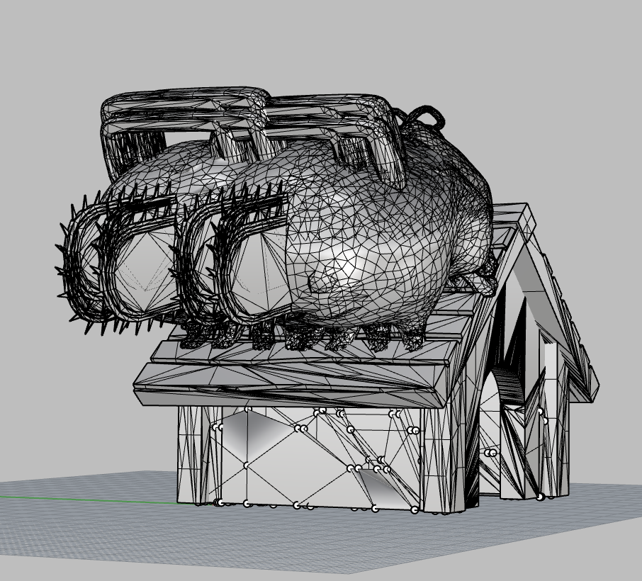
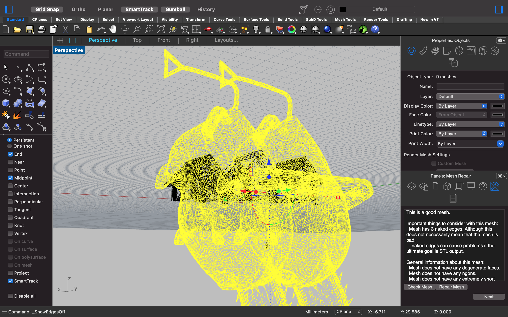
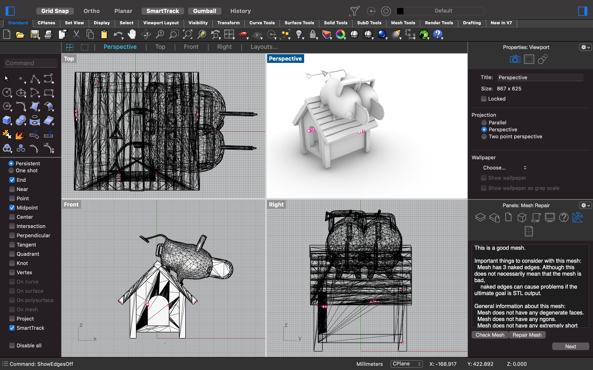
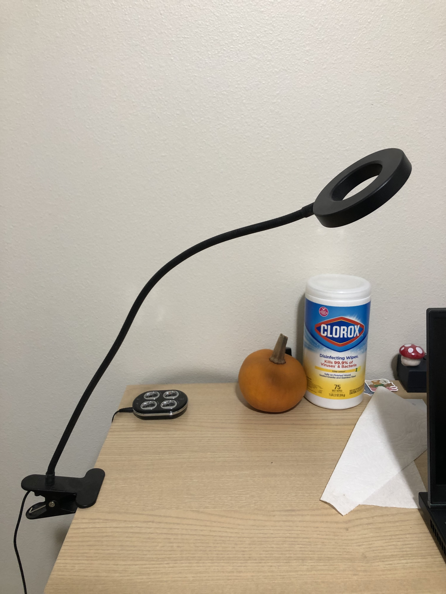

i'm going to modify two meshes and combine these into one mesh and fix all of the things that are wrong with these meshes, hopefully they will pass aalllll the checks. and then i'm going to start making a lamp!
this is the part where it starts to feel like somthing from a horror movie. i searched for the meshes i wanted from thingaverse and i decided on two things:
i downloaded these two meshes (STLs) and checked if i needed to repair anything using MeshRepair, which confirmed that on their own, both STLs were valid and had good mesh geometries. for pochita, i reduced the number of polygons massively so that it would be more editable. then i used the command Copy to copy the mesh of pochita and overlap them. then I used BooleanUnion to join both of these pochita copies. (why did i do that? i was just following prof. nadya's example!)however, when i put the two pochita's on top of the doghouse i happened to come across, and when i BooleanUnion'd them, the MeshRepair panel showed that this mesh was a Bad Mesh. i was not happy about that...
after reducing the meshes and using the MeshRepair to repair the meshes automatically, i found out that this combined mesh had some naked edges (which were unproblematic, it seemed?) and 4 non-manifold edges. after much googling, i learned more about non-manifold edges than i wanted to. a solution was to (1) add a new face to connect the vertices so that the non-manifold edge would disappear or (2) delete the edge so that it doesn't exist anymore... but then it would present a new problem, creating an open surface mesh, which i didn't want! i wanted a closed surface mesh to make it easier for the STL to legitimately be prototype-able. alas, i am still trying to figure out how to get rid of the non-manifold edges, but i am content to have figured out how to use MeshRepair, ReduceMesh, and BooleanUnion. i could also have used BooleanDifference if i wanted to create a hollow space, but i didn't feel like doing that.

my mesh edit for now... i could probably start over...
after submitting this assignment on canvas, i examined my image and realized that i had somehow copied one mesh twice. i started over again, and imported both pochita and house meshes in a new rhino file. then i MeshReduce'd the number of polygons for the pochita's to bring it down to the same number of polygons as the house (roughly) when the house is Scale'd up. i positioned the pochita's on the house all perspectives and constantly MeshRepair'd to check for any discrepancies and repair the meshes. i deleted some naked edges and floating edges, and i was able to clean up the mesh edit. it looks better now! i could finally export this as a STL, ready for 3d printing.
 
one thing i would have liked to learn more about is loft command in rhino. i still feel confused about what loft does, so hopefully i'll figure that out one day.
after spending significant amount of time on editing the meshes, i decided to at least make some progress on the lamp project. first, i sourced a lamp that i could use for this assignment. i decided on this black flexible lamp in my bedroom:

i didn't have a caliper yet, so i opted to create a general design. first, i sketched my ideas for the lamp shade.
i imagined a hexagonal/square-ish base for the lamp that would come with dog bones or box or finger joints, depending on how the final design comes along. i felt that it would fit snugly onto the lamp innard while giving enough space for air to flow freely. i also imagined large flower petals coming out of this base as part of the lamp shade (where there might be holes or spaces for the petals to fit), and i suspect that i would need to use 3d printing for this component. i might think about using cnc milling for the base. we will see!
my next steps are to measure the lamp innards, create the design in rhino, create a smaller version of the lamp prototype so that it's easier to modify the design in CAD as needed, scale this model to a larger model that fits the lamp innard, and conduct some lighting tests, whatever those might be. i am curious about how this design might work.
'til next time! read on for part 2 of the lamp project + part 1 of the casting / molding shenanigans!
[ RHINO FILE - PART 1 - MESH EDIT ]
[ RHINO FILE - PART 1 - MESH EDIT - RESOLVED ]
[ STL FILE - PART 1 - MESH EDIT ]
[ RHINO FILE - PART 2 - LAMP DESIGN (TENTATIVE) ]
[ CLIP STUDIO PAINT FILE - LAMP DESIGN (MUST OPEN IN CLIP STUDIO PAINT) ]
props to our amazing ta junchao always, and for this assignment, a massive gratitude to the folks who worked on the meshes and uploaded these to thingiverse so i could edit these two. a small shout out to noelle for giving me an idea on how i could solve the problem of putting the lamp shade on the lamp innard without the use of glue, adhesive, fasteners, or something else. also thanks carmen, my roommate, for getting the lamp!